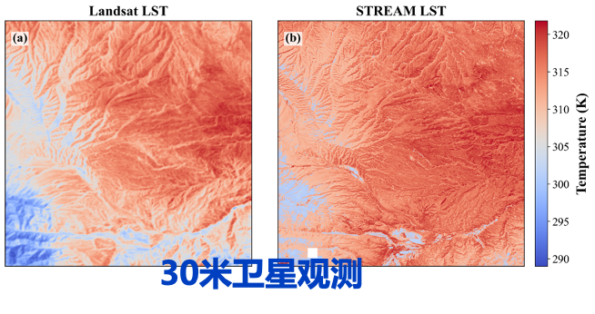
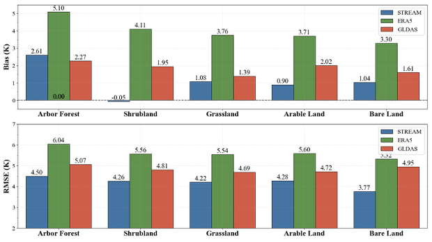
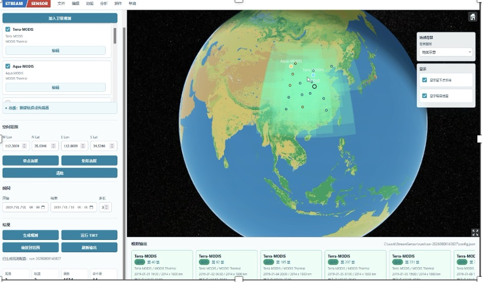
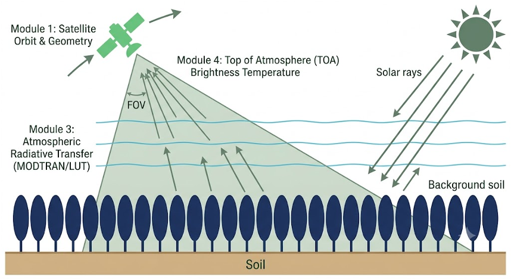

STREAM 案例STREAM case studies
从地表温度空间模拟、不同地类精度验证，到卫星观测与在轨成像论证，展示 STREAM 在遥感数字孪生研究中的应用。Explore STREAM applications in remote sensing digital twins, from spatial simulation of land surface temperature and evaluation across land cover types to satellite observation and imaging assessment.
地表温度空间模拟Spatial temperature simulation
以组分温度连接辐射传输与能量平衡过程，模拟复杂地表的温度空间分布，并与 Landsat 地表温度进行对比。Component temperatures link radiative transfer and energy balance processes to simulate spatial temperature patterns over complex surfaces, with Landsat land surface temperature used for comparison.
- 研究问题Question
- 如何在复杂地表场景中表征地表温度的空间差异？How can spatial temperature differences be represented over complex land surfaces?
- 模拟方法Method
- 耦合辐射传输与能量平衡过程，开展地表温度空间模拟。Couple radiative transfer and energy balance processes to simulate spatial patterns in land surface temperature.
- 案例结果Result
- 并列展示 Landsat 与 STREAM 的地表温度分布，比较空间格局与局地变化。Compare Landsat and STREAM temperature maps side by side to examine spatial patterns and local variations.

不同地类的模拟精度Evaluation across land cover types
面向乔木林、灌丛、草地、耕地与裸地，比较 STREAM、ERA5 和 GLDAS 的温度偏差与均方根误差。Compare temperature bias and root mean square error for STREAM, ERA5 and GLDAS over forest, shrubland, grassland, arable land and bare land.
- 研究问题Question
- 不同地表类型下，温度模拟的偏差和误差有何差异？How do temperature simulation bias and error vary across land cover types?
- 评估方法Method
- 按地类分别统计 Bias 和 RMSE，并与 ERA5、GLDAS 进行对比。Evaluate Bias and RMSE separately for each land cover type and compare STREAM with ERA5 and GLDAS.
- 案例结果Result
- 图示五类地表中，STREAM 的 RMSE 均低于 ERA5 和 GLDAS；各类地表的差异可在原图中查看。In the five land cover types shown, STREAM has lower RMSE than ERA5 and GLDAS. The original figure provides the results for each type.

StreamSensor 卫星论证StreamSensor mission assessment
耦合地表、大气、轨道与传感器要素，模拟卫星观测与成像过程，为热红外传感器波段和角度优选提供支持。Couple surface, atmosphere, orbit and sensor elements to simulate satellite observations and imaging, supporting the assessment of thermal infrared spectral bands and viewing angles.
- 应用需求Application
- 面向真实地表状况和典型应用，开展传感器指标优化仿真论证。Assess sensor specifications through simulation under real surface conditions and representative applications.
- 系统流程Workflow
- 结合卫星轨道与观测几何、地表热辐射和大气辐射传输，模拟大气顶亮温。Combine satellite orbit and observation geometry, surface thermal radiation and atmospheric radiative transfer to simulate top-of-atmosphere brightness temperature.
- 案例展示Demonstration
- 展示卫星配置、时空范围设置及观测覆盖模拟界面。Explore the interface for satellite configuration, spatial and temporal settings, and simulated observation coverage.


获取软件与使用文档Software & documentation
通过 STREAM Studio 项目仓库了解软件功能、安装方式和使用文档。Visit the STREAM Studio repository for software features, installation instructions and documentation.
点击案例图片可查看原图。Select a case image to view the original.